COURSEWORK / INTERACTIVE CODING / DOCUMENT
下载原始 Word 文档 ↓INTERACTIVE NARRATIVE / PROJECT DOCUMENT
作品说明
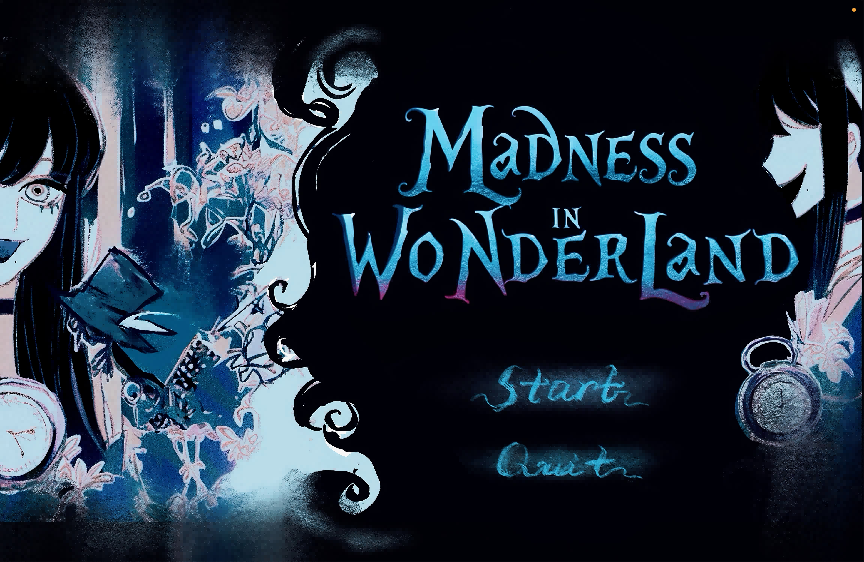
《疯狂仙境》（Madness in Wonderland）
图片为绘制的封面页 鼠标点击 点击“Start”进入章节选择，“Quit”退出
01 / 作品概述
作品类型：视觉小说 + 互动叙事游戏
不同的爱丽丝形象角色掉进自己构建的扭曲仙境。每个仙境角色都承载爱丽丝内心的一种声音——柴郡猫代表“渴望被理解却不敢靠近”，疯帽子代表“渴望被无条件爱着”，红皇后代表“愤怒与自我毁灭”
心理叙事重构：每个角色都是主角内心的一重人格，主线内容的创新
文游+小游戏混合体：深度叙事文本与轻量游戏机制交替推进，避免纯阅读疲劳，丰富互动玩法
用不同类型的轻量小游戏（校准点击、寻找目标、抽牌、QTE战斗、迷宫）对应不同角色的性格特征
玩家体验 通过文游对话的深度文本和选择分支，让玩家逐步拼凑出“爱丽丝究竟在逃避什么”的真相
02 / 角色设定
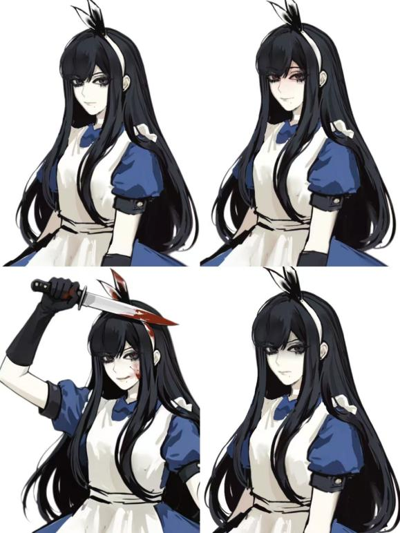
爱丽丝（主角）
· 定位：玩家化身，她的选择决定故事走向
柴郡猫（第二章）
· 角色定位：爱丽丝内心“渴望被理解却不敢靠近”的部分
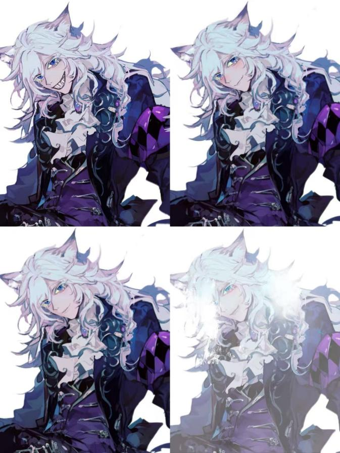
疯帽子（第三章）
·
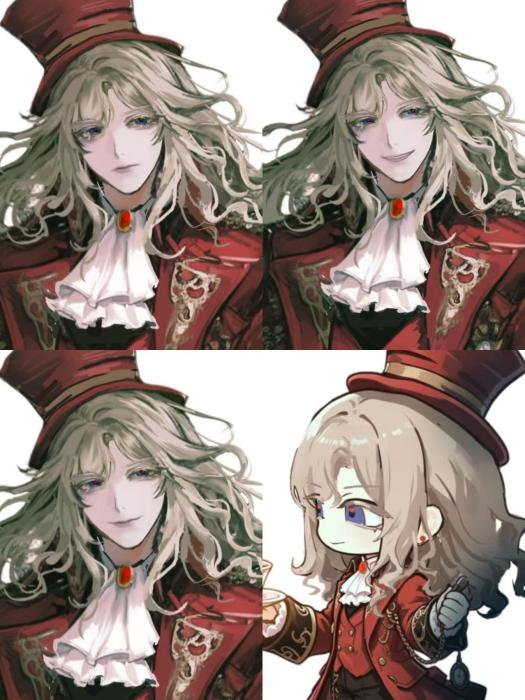
角色定位：爱丽丝内心“渴望被无条件爱着”的部分
红皇后（第四章）
· 角色定位：爱丽丝内心“愤怒与自我毁灭”的部分
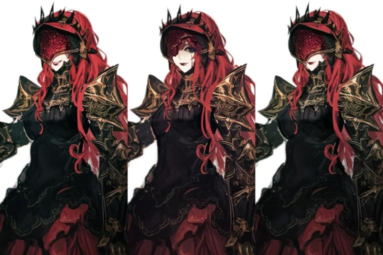
03 / 视觉风格
整体风格手绘动画风格，融合1951年迪士尼《爱丽丝梦游仙境》的平面美学与哥特式暗黑基调。
美术特点
· 角色为2D手绘立绘，表情丰富（爱丽丝4种表情、柴郡猫4种、疯帽子3种、红皇后2种）
· 场景为横向卷轴式背景图，尺寸统一为2560×1664
· 交互物品用透明PNG单独绘制，叠加在背景上实现点击交互
04 / 游戏玩法
游戏采用鼠标点击为主、键盘为辅的交互方式，不同场景使用不同操作模式：
整体结构（四章 + 结局）
每个章节包含文游对话部分，鼠标点击点击屏幕推进对话，点击选项按钮进行选择
序幕（封面）→ 章节选择，绘制了专门的页面，点击每个可进入单独章节，从头玩起可一直串联到结局。
↓
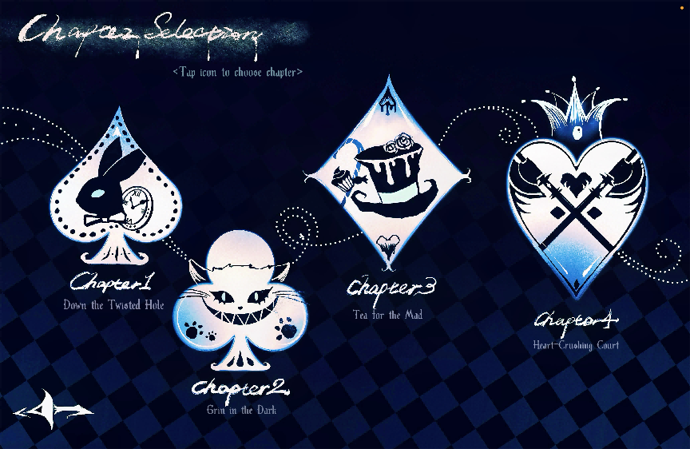
第一章：坠入扭曲洞（追逐小游戏 + 兔子对话）
第一章小游戏（校准）
· 玩法：滑块在进度条上快速移动，玩家在滑块进入高亮区域时点击
· 成功条件：5次成功校准
· 失败条件：3次失误或倒计时结束
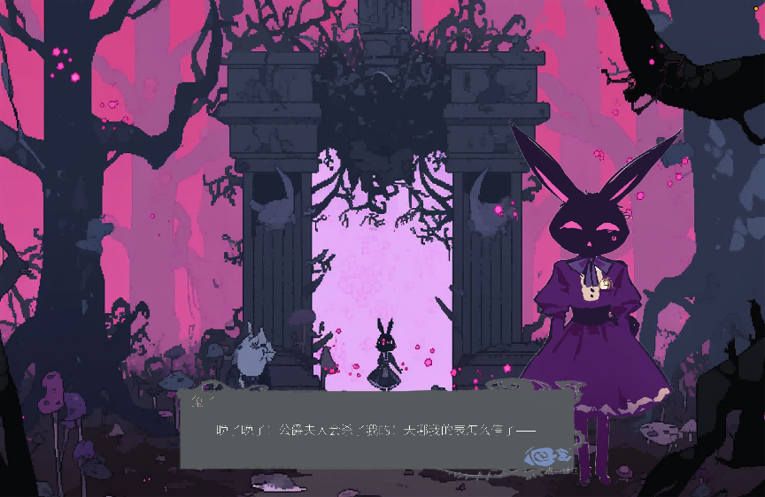
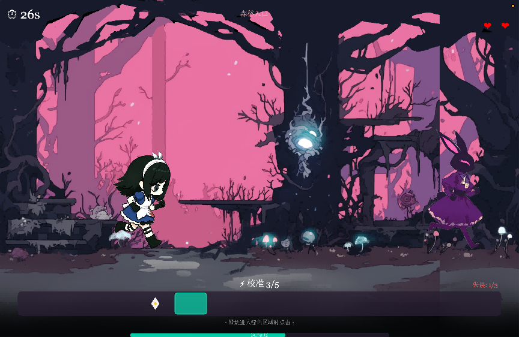
第二章：狞笑迷踪（猫影点击 + 柴郡猫对话）
小游戏部分（猫影） 鼠标点击 点击屏幕中闪烁的柴郡猫影像
完成特殊节点会呈现绘制的不同反馈画面，丰富游戏内容
↓
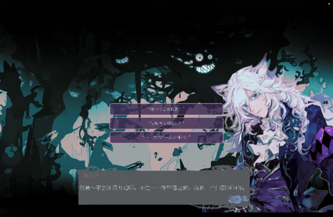
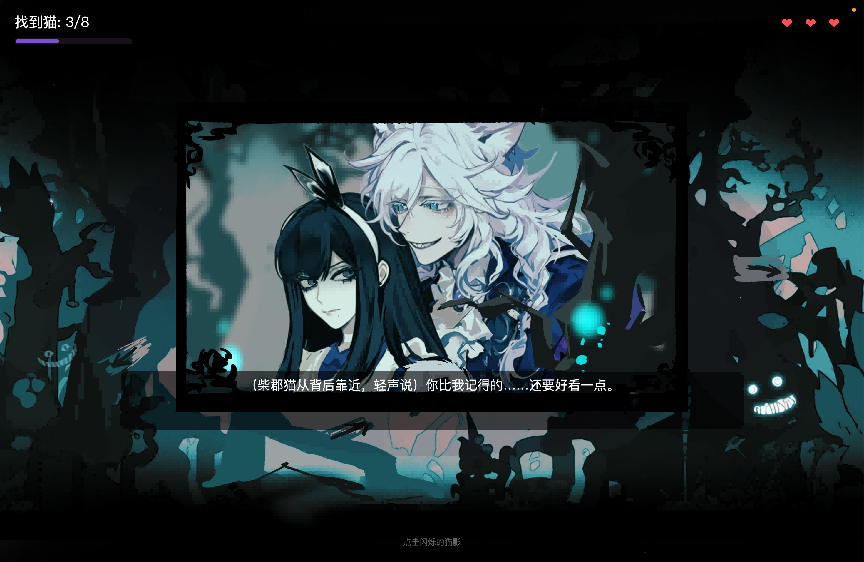
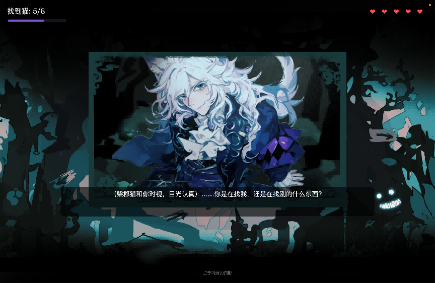
· 玩法：柴郡猫在黑暗森林中闪烁出现，玩家点击捕捉
· 成功条件：点击8次成功
· 失败条件：3条命耗尽
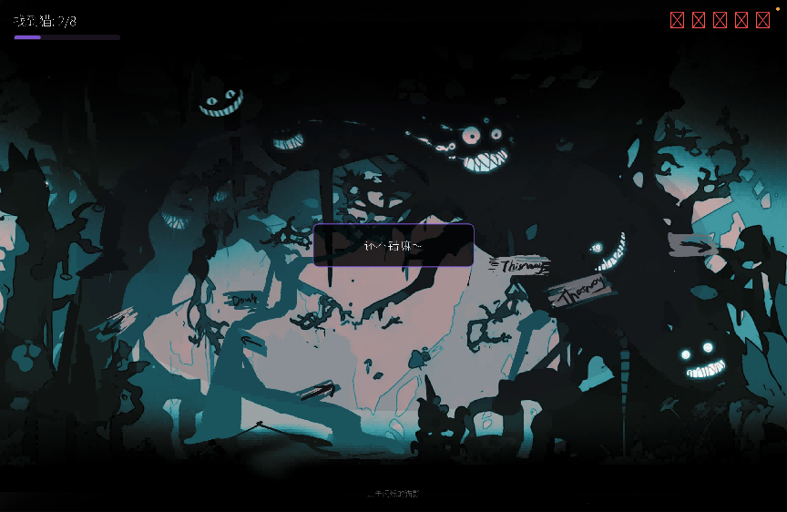
过渡段（扭曲森林 → 茶话会，点击蘑菇/猫影/茶壶/糕点/疯帽子Q版）可奔跑爱丽丝+可互动物品
键盘 + 鼠标 方向键控制爱丽丝行走，鼠标点击交互物品
↓
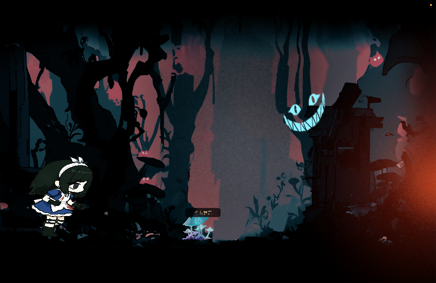
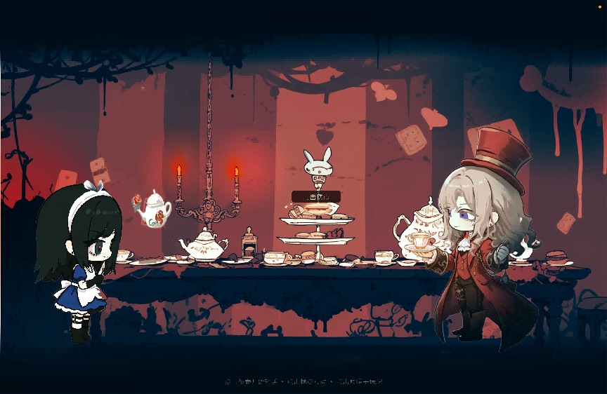
第三章：疯癫茶宴（茶话会交互 + 抽鬼牌 （卡牌样式）
茶话会场景 鼠标点击 点击茶壶、糕点、疯帽子触发不同互动，文游对话模块推进剧情
抽鬼牌游戏 鼠标点击 点击疯帽子面前的牌背进行抽取，卡牌类互↓绘制的卡面特殊交互
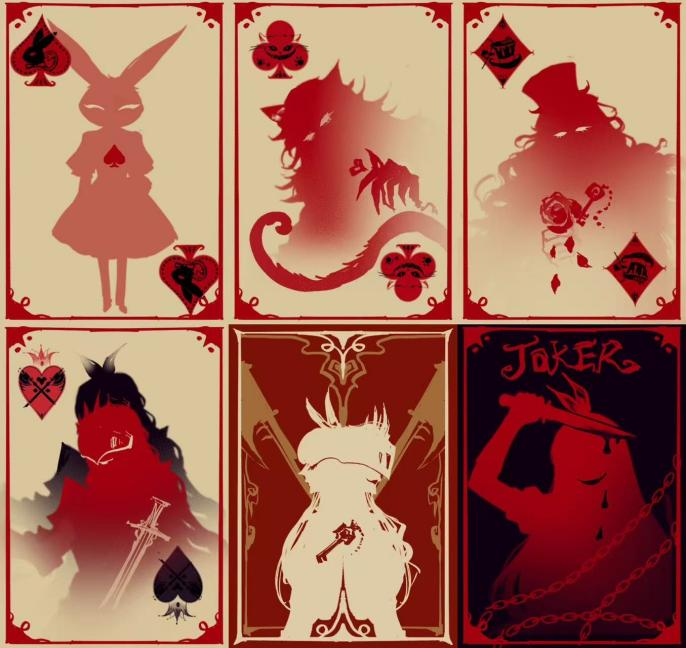
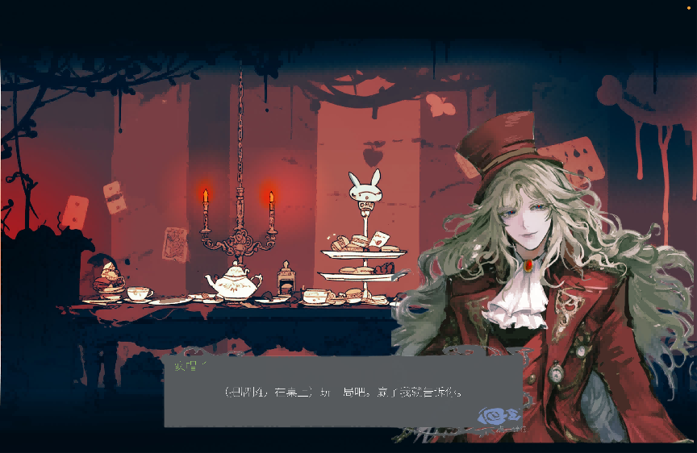
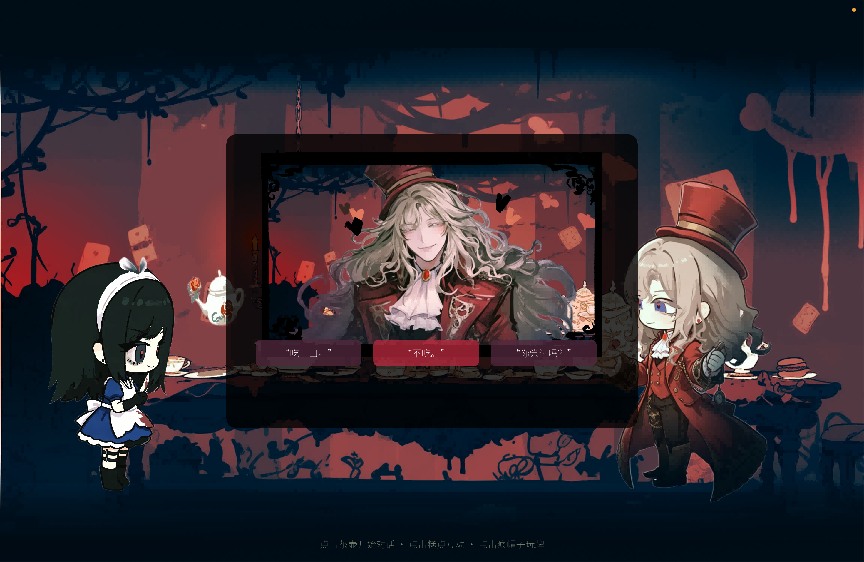
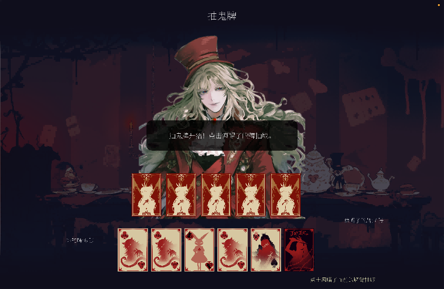
点击卡牌进行抽取游玩，
· 玩法：与疯帽子进行抽鬼牌游戏，轮流抽取对方手牌，配对消除
· 成功条件：疯帽子手里剩鬼牌
· 失败条件：玩家手里剩鬼牌
第四章：红心绞杀（QTE战斗 + 面具碎裂 + 迷宫逃脱）
↓
通快速反应点击对应方向键来攻击红皇后角色，失败会屏幕闪红光表达失败，成功屏幕闪白表现击倒角色
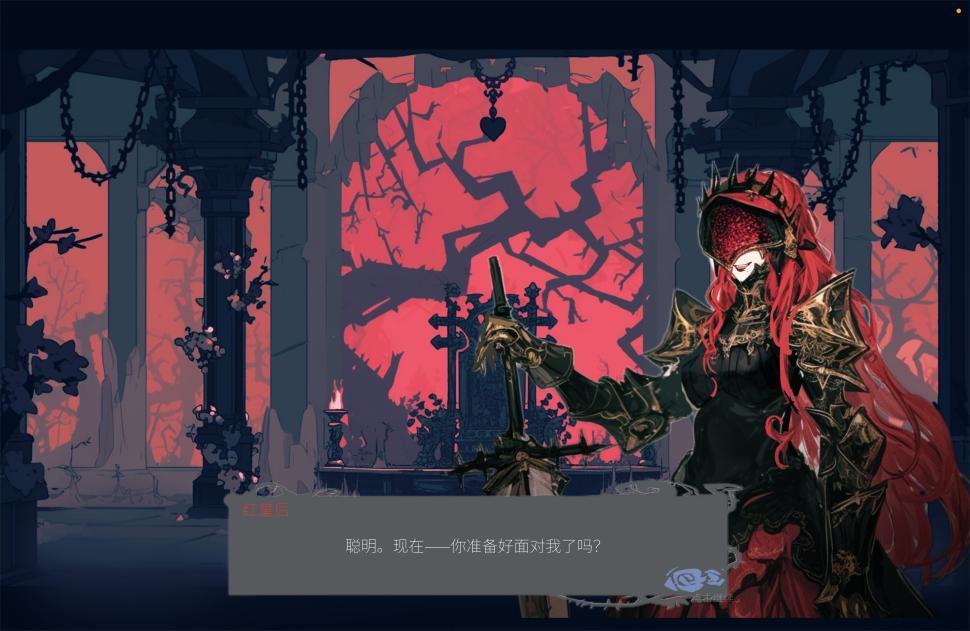
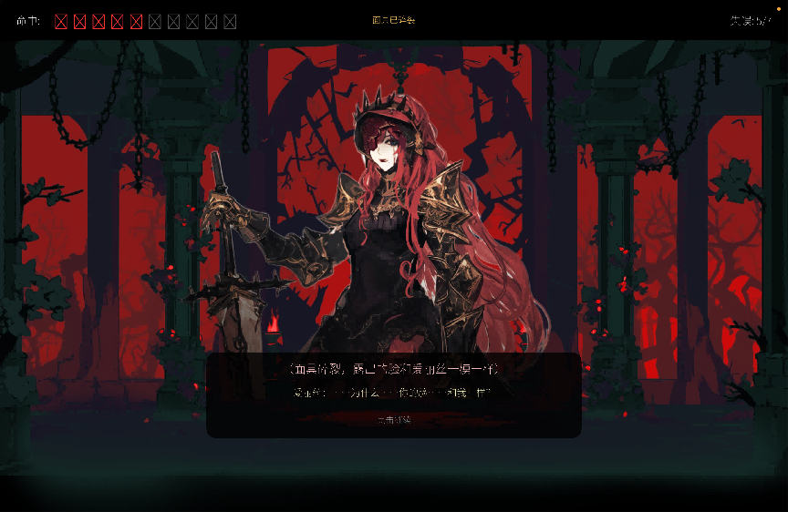
· 战斗玩法：红皇后释放箭头方向提示，玩家按对应方向键，成功10次胜利
· 迷宫玩法：在15×15迷宫中躲避纸牌士兵，到达出口逃离
迷宫逃脱 键盘 方向键控制爱丽丝在迷宫中移动
交
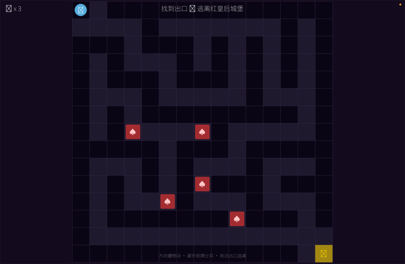
视觉反馈 按钮悬停变色、立绘切换、闪屏（命中白光/失误红光）
文字反馈 打字机效果逐字显示、角色对话气泡
进度反馈 生命值（红心）、进度条、计数显示
音效反馈 点击音效、背景音乐切换（开屏音乐+四章+单独战斗系统音乐不同音乐）
05 / 技术实现说明
架构设计
· 状态机模式：使用 gameState 变量管理所有场景切换（封面、章节选择、对话、小游戏、战斗、迷宫等）
· 对话系统：独立的文游对话引擎，支持打字机效果、分支选项、多角色立绘切换
· 图片加载：所有素材在 setup() 中预加载，避免运行时卡顿
使用的外部库
库名 用途
Minim 背景音乐播放
Sound 音效播放
Collections 抽鬼牌游戏中的牌组洗牌
06 / 结语
《疯狂仙境》是一次对经典童话的个性化重述，也是一次对心理创伤、情绪修复的视觉化探索。在游戏中，玩家不仅是在“玩”一个故事，更是在逐步拼凑爱丽丝内心碎裂的拼图——当她最终承认“我受伤了”时，仙境才开始崩塌。